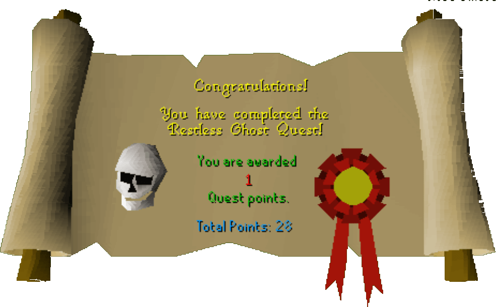

The Restless Ghost
Description: A ghost is haunting Lumbridge graveyard. The priest of the Lumbridge church of Saradomin wants you to find out how to get rid of it.Difficulty: Novice
Length: Medium
Items & Skills Needed:
- None
Recommended:
- The ability to kill or run away from a level 13 skeleton
Reward: 1 Quest point, 1,125 Prayer XP
Instructions:
Talk to Father Aerick and he'll inform you of the situation. He wants you to visit Father Urhney, who is meditating in the swamps (how boring would that be?), and ask him how to get rid of the ghost.
Go north around the castle, then west until you reach the edge of a fence. Head south of it and proceed east to the southeast corner of the swamp.
Talk to Urhney and he'll give you an Amulet of Ghostspeak, along with some info on what the ghost might want.
Head back to the church graveyard and talk to the ghost. He'll be surprised that you can understand him. After getting over himself, he'll explain that a warlock stole his skull from his coffin and took it to an island — the Wizard's Tower Island.
Head over there and go into the basement. Look for a skull and take it. A skeleton will pop out — kill it, or just grab the skull and hightail it out of there.
Go back to the tomb and use the skull on the ghost's coffin. The ghost will vanish and whisper "thank you." Of course, a minor thank you isn't going to cut it — so naturally, the ghost also gives you your reward. Quest complete.
Congratulations, Quest Complete!

This quest guide was written on RuneHQ by Gnat88. Thanks to Urger and Weezy for corrections.
This quest guide was entered into the database on Sat, Feb 28, 2004, at 04:46:45 PM by Monkeychris and was last updated on Wed, Mar 31, 2004, at 05:00:31 PM.